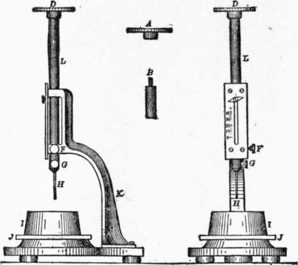

Report Of Committee On Uniform Tests Of Cement. Part 2
Description
This section is from the book "Cement And Concrete", by Louis Carlton Sabin. Also available from Amazon: Cement and Concrete.
Report Of Committee On Uniform Tests Of Cement. Part 2
14. (2) The whole quantity of the powder is introduced, and the level of the liquid rises to some division of the graduated neck. This reading plus 20 cu. cm. is the volume displaced by 64 gr. of the powder.
15. The specific gravity is then obtained from the formula:
Specific Gravity = Weight of Cement/Displaced volume.
16. The flask, during the operation, is kept immersed in water in a jar (A), in order to avoid variations in the temperature of the liquid. The results should agree within 0.01.
17. A convenient method for cleaning the apparatus is as follows. The flask is inverted over a large vessel, preferably a glass jar, and shaken vertically until the liquid starts to flow freely; it is then held still in a vertical position until empty; the remaining traces of cement can be removed in a similar manner by pouring into the flask a small quantity of clean liquid and repeating the operation.
18. More accurate determinations may be made with the picnometer.
Fineness
19. Significance
It is generally accepted that the coarser particles in cement are practically inert, and it is only the extremely fine powder that possesses adhesive or cementing qualities. The more finely cement is pulverized, all other conditions being the same, the more sand it will carry and produce a mortar of a given strength.
20. The degree of final pulverization which the cement receives at the place of manufacture is ascertained by measuring the residue retained on certain sieves. Those known as the No. 100 and No. 200 sieves are recommended for this purpose.
21. Apparatus
The sieves should be circular, about 20 cm. (7.87 ins.) in diameter, 6 cm. (2.36 ins.) high, and provided with a pan 5 cm. (1.97 ins.) deep, and a cover.
22. The wire cloth should be woven from brass wire having the following diameters:
No. 100, 0.0045 in.; No. 200, 0.0024 in.
23. This cloth should be mounted on the frames without distortion; the mesh should be regular in spacing and be within the following limits:
No. 100, 96 to 100 meshes to the linear inch. No. 200, 188 to 200 " " "
24. Fifty grams (1.76 oz.) or 100 gr. (3.52 oz.) should be used for the test, and dried at a temperature of 100° Cent. (212° Fahr.) prior to sieving.
25. Method
The Committee, after careful investigation, has reached the conclusion that mechanical sieving is not as practicable or efficient as hand work, and, therefore, recommends the following method:
26. The thoroughly dried and coarsely screened sample is weighed and placed on the No. 200 sieve, which, with pan and cover attached, is held in one hand in a slightly inclined position, and moved forward and backward, at the same time striking the side gently with the palm of the other hand, at the rate of about 200 strokes per minute. The operation is continued until not more than one-tenth of 1 per cent passes through after one minute of continuous sieving. The residue is weighed, then placed on the No. 100 sieve and the operation repeated. The work may be expedited by placing in the sieve a small quantity of large shot. The results should be reported to the nearest tenth of 1 per cent.
Normal Consistency
27. Significance
The use of a proper percentage of water in making the pastes1 from which pats, tests of setting, and briquettes are made, is exceedingly important, and affects vitally the results obtained.
1 The term " paste " is used in this report to designate a mixture of cement and water, and the word " mortar " a mixture of cement, sand, and water.
28. The determination consists in measuring the amount of water required to reduce the cement to a given state of plasticity, or to what is usually designated the normal consistency.
29. Various methods have been proposed for making this determination, none of which has been found entirely satisfactory. The Committee recommends the following:
30. Method. Vicat Needle Apparatus
This consists of a frame (K), Fig. 2, bearing a movable rod (L), with the cap (A) at one end, and at the other the cylinder (B), 1 cm. (0.39 in.) in diameter, the cap, rod, and cylinder weighing 300 gr. (10.58 oz.). The rod, which can be held in any desired position by a screw (F), carries an indicator, which moves over a scale (graduated to centimeters) attached to the frame (K). The paste is held by a conical, hard-rubber ring (I), 7 cm. (2.76 ins.) in diameter at the base, 4 cm. (1.57 ins.) high, resting on a glass plate (J), about 10 cm. (3.94 ins.) square.
Fig. 2.
31. In making the determination, the same quantity of cement as will be subsequently used for each batch in making the briquettes (but not less than 500 grams) is kneaded into a paste, as described in Paragraph 58, and quickly formed into a ball with the hands, completing the operation by tossing it six times from one hand to the other, maintained 6 ins. apart; the ball is then pressed into the rubber ring, through the larger opening, smoothed off, and placed (on its large end) on a glass plate and the smaller end smoothed off with a trowel; the paste, confined in the ring, resting on the plate, is placed under the rod bearing the cylinder which is brought in contact with the surface and quickly released.
Percentage Of Water For Standard Sand Mortars
Neat. | One Cement Three Standard Ottawa Sand. | Neat. | One Cement Three Standard Ottawa Sand. | Neat. | One Cement Three Standard Ottawa Sand. |
15 | 8.0 | 23 | 9.3 | 31 | 10.7 |
16 | 8.2 | 24 | 9.5 | 32 | 10.8 |
17 | 8.3 | 25 | 9.7 | 33 | 11.0 |
18 | 8.5 | 26 | 9.8 | 34 | 11.2 |
19 | 8.7 | 27 | 10.0 | 35 | 11.5 |
20 | 8.8 | 28 | 10.2 | 36 | 11.5 |
21 | 9.0 | 29 | 10.3 | 37 | 11.7 |
22 | 9.2 | 30 | 10.5 | 38 | 11.8 |
1 to 1 | 1 to 2 | 1 to 3 | 1 to 4 | 1 to 5 | |
Cement .... | 500 | 333 | 250 | 200 | 167 |
Sand...... | 50 | 666 | 750 | 800 | 833 |
32. The paste is of normal consistency when the cylinder penetrates to a point in the mass 10 mm. (0.39 in.) below the top of the ring. Great care must be taken to fill the ring exactly to the top.
33. The trial pastes are made with varying percentages of water until the correct consistency is obtained.
34. The Committee has recommended, as normal, a paste, the consistency of which is rather wet, because it believes that variations in the amount of compression to which the briquette is subjected in moulding are likely to be less with such a paste.
35. Having determined in this manner the proper percentage of water required to produce a paste of normal consistency, the proper percentage required for the mortars is obtained from an empirical formula.
36. The Committee hopes to devise such a formula. The subject proves to be a very difficult one, and, although the Committee has given it much study, it is not yet prepared to make a definite recommendation.1
Continue to:
- prev: Appendix I. Progress Report Of Committee On Uniform Tests Of Cement, American Society Of CIVIL Engineers
- Table of Contents
- next: Report Of Committee On Uniform Tests Of Cement. Part 3